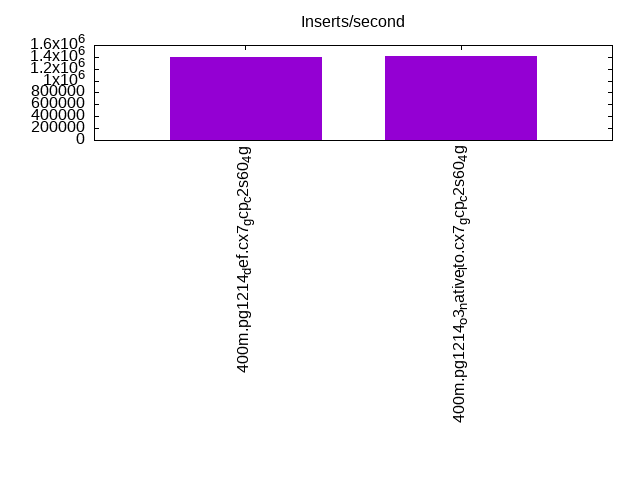
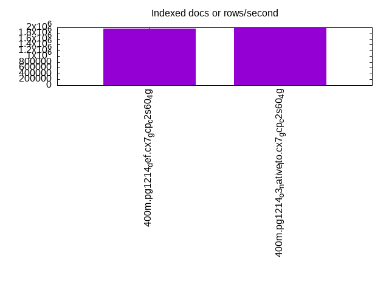
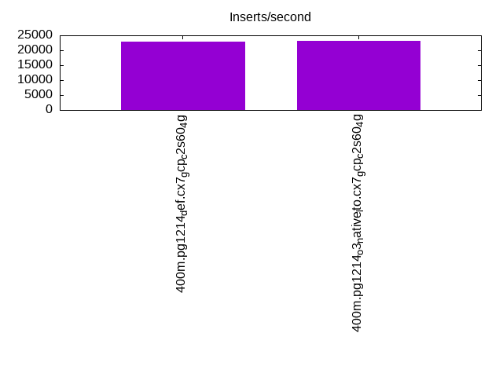
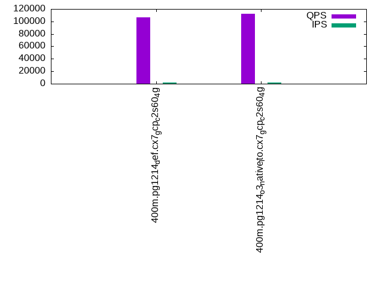
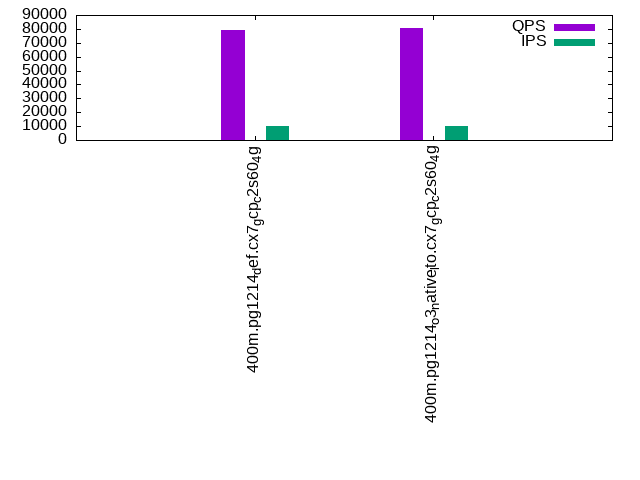
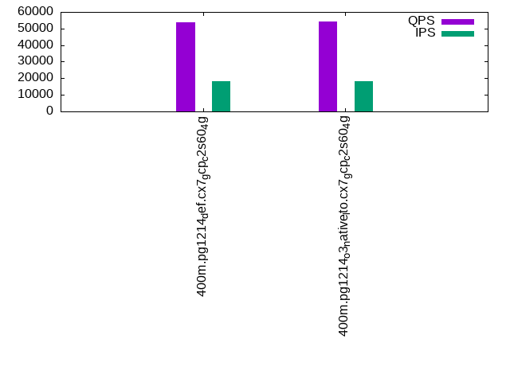

This is a report for the insert benchmark with 400M docs and 20 client(s). It is generated by scripts (bash, awk, sed) and Tufte might not be impressed. An overview of the insert benchmark is here and a short update is here. Below, by DBMS, I mean DBMS+version.config. An example is my8020.c10b40 where my means MySQL, 8020 is version 8.0.20 and c10b40 is the name for the configuration file.
The test server is a c2-standard-60 from GCP with 30 cores, hyperthreading disabled, 240G RAM and 3T from XFS and SW RAID 0 striped over 8 local NVMe drives. The benchmark was run with 20 clients and there were 1 or 2 connections per client (1 for queries, 1 for inserts). The benchmark loads 400M rows without secondary indexes, creates secondary indexes, loads another 400M rows then does 3 read+write tests for one hour each that do queries as fast as possible with 100, 500 and then 1000 writes/second/client concurrent with the queries. Each read-write test runs for 1800 seconds. The test was configured to use a table per client. The database fits in the OS page cache but not the DBMS buffer pool. Clients and the DBMS share one server. The per-database configs are in the per-database subdirectories here.
The tested DBMS are:
The numbers are inserts/s for l.i0 and l.i1, indexed docs (or rows) /s for l.x and queries/s for q*.2. The values are the average rate over the entire test for inserts (IPS) and queries (QPS). The range of values for IPS and QPS is split into 3 parts: bottom 25%, middle 50%, top 25%. Values in the bottom 25% have a red background, values in the top 25% have a green background and values in the middle have no color. A gray background is used for values that can be ignored because the DBMS did not sustain the target insert rate. Red backgrounds are not used when the minimum value is within 80% of the max value.
| dbms | l.i0 | l.x | l.i1 | q100.1 | q500.1 | q1000.1 |
|---|---|---|---|---|---|---|
| 400m.pg1214_def.cx7_gcp_c2s60_4g | 1393728 | 1951707 | 23010 | 106161 | 78943 | 53674 |
| 400m.pg1214_o3_native_lto.cx7_gcp_c2s60_4g | 1408451 | 1990547 | 23214 | 112795 | 80661 | 54110 |
This lists the average rate of inserts/s for the tests that do inserts concurrent with queries. For such tests the query rate is listed in the table above. The read+write tests are setup so that the insert rate should match the target rate every second. Cells that are not at least 95% of the target have a red background to indicate a failure to satisfy the target.
| dbms | q100.1 | q500.1 | q1000.1 |
|---|---|---|---|
| pg1214_def.cx7_gcp_c2s60_4g | 1976 | 9885 | 18090 |
| pg1214_o3_native_lto.cx7_gcp_c2s60_4g | 1976 | 9885 | 18000 |
| target | 2000 | 10000 | 20000 |
l.i0: load without secondary indexes. Graphs for performance per 1-second interval are here.
Average throughput:
Insert response time histogram: each cell has the percentage of responses that take <= the time in the header and max is the max response time in seconds. For the max column values in the top 25% of the range have a red background and in the bottom 25% of the range have a green background. The red background is not used when the min value is within 80% of the max value.
| dbms | 256us | 1ms | 4ms | 16ms | 64ms | 256ms | 1s | 4s | 16s | gt | max |
|---|---|---|---|---|---|---|---|---|---|---|---|
| pg1214_def.cx7_gcp_c2s60_4g | 63.836 | 34.872 | 1.179 | 0.076 | 0.030 | 0.007 | 0.001 | 1.052 | |||
| pg1214_o3_native_lto.cx7_gcp_c2s60_4g | 62.613 | 36.237 | 1.038 | 0.067 | 0.035 | 0.010 | 0.509 |
Performance metrics for the DBMS listed above. Some are normalized by throughput, others are not. Legend for results is here.
ips qps rps rmbps wps wmbps rpq rkbpq wpi wkbpi csps cpups cspq cpupq dbgb1 dbgb2 rss maxop p50 p99 tag 1393728 0 737 32.8 10957.4 597.3 0.001 0.024 0.008 0.439 196847 60.7 0.141 13 38.3 103.2 NA 1.052 78909 11592 400m.pg1214_def.cx7_gcp_c2s60_4g 1408451 0 1201 32.0 11058.2 597.8 0.001 0.023 0.008 0.435 216947 59.5 0.154 13 38.3 103.2 NA 0.509 80110 19978 400m.pg1214_o3_native_lto.cx7_gcp_c2s60_4g
l.x: create secondary indexes.
Average throughput:
Performance metrics for the DBMS listed above. Some are normalized by throughput, others are not. Legend for results is here.
ips qps rps rmbps wps wmbps rpq rkbpq wpi wkbpi csps cpups cspq cpupq dbgb1 dbgb2 rss maxop p50 p99 tag 1951707 0 10916 287.2 8310.3 728.5 0.006 0.151 0.004 0.382 130158 23.0 0.067 4 73.5 176.7 0.0 0.099 NA NA 400m.pg1214_def.cx7_gcp_c2s60_4g 1990547 0 13373 296.2 7980.7 735.0 0.007 0.152 0.004 0.378 131468 22.0 0.066 3 73.5 176.6 NA 0.176 NA NA 400m.pg1214_o3_native_lto.cx7_gcp_c2s60_4g
l.i1: continue load after secondary indexes created. Graphs for performance per 1-second interval are here.
Average throughput:
Insert response time histogram: each cell has the percentage of responses that take <= the time in the header and max is the max response time in seconds. For the max column values in the top 25% of the range have a red background and in the bottom 25% of the range have a green background. The red background is not used when the min value is within 80% of the max value.
| dbms | 256us | 1ms | 4ms | 16ms | 64ms | 256ms | 1s | 4s | 16s | gt | max |
|---|---|---|---|---|---|---|---|---|---|---|---|
| pg1214_def.cx7_gcp_c2s60_4g | nonzero | 0.047 | 88.292 | 11.657 | 0.004 | 0.403 | |||||
| pg1214_o3_native_lto.cx7_gcp_c2s60_4g | 0.021 | 88.552 | 11.423 | 0.003 | 0.411 |
Performance metrics for the DBMS listed above. Some are normalized by throughput, others are not. Legend for results is here.
ips qps rps rmbps wps wmbps rpq rkbpq wpi wkbpi csps cpups cspq cpupq dbgb1 dbgb2 rss maxop p50 p99 tag 23010 0 70629 730.3 62499.6 602.6 3.070 32.499 2.716 26.818 132794 12.2 5.771 159 163.1 241.8 0.0 0.403 1199 599 400m.pg1214_def.cx7_gcp_c2s60_4g 23214 0 70200 726.8 63027.7 607.0 3.024 32.061 2.715 26.777 133977 11.9 5.771 154 163.1 240.8 0.0 0.411 1199 599 400m.pg1214_o3_native_lto.cx7_gcp_c2s60_4g
q100.1: range queries with 100 insert/s per client. Graphs for performance per 1-second interval are here.
Average throughput:
Query response time histogram: each cell has the percentage of responses that take <= the time in the header and max is the max response time in seconds. For max values in the top 25% of the range have a red background and in the bottom 25% of the range have a green background. The red background is not used when the min value is within 80% of the max value.
| dbms | 256us | 1ms | 4ms | 16ms | 64ms | 256ms | 1s | 4s | 16s | gt | max |
|---|---|---|---|---|---|---|---|---|---|---|---|
| pg1214_def.cx7_gcp_c2s60_4g | 68.849 | 30.954 | 0.191 | 0.005 | nonzero | nonzero | 0.091 | ||||
| pg1214_o3_native_lto.cx7_gcp_c2s60_4g | 71.395 | 28.418 | 0.182 | 0.004 | nonzero | nonzero | 0.113 |
Insert response time histogram: each cell has the percentage of responses that take <= the time in the header and max is the max response time in seconds. For max values in the top 25% of the range have a red background and in the bottom 25% of the range have a green background. The red background is not used when the min value is within 80% of the max value.
| dbms | 256us | 1ms | 4ms | 16ms | 64ms | 256ms | 1s | 4s | 16s | gt | max |
|---|---|---|---|---|---|---|---|---|---|---|---|
| pg1214_def.cx7_gcp_c2s60_4g | 0.022 | 99.511 | 0.467 | 0.096 | |||||||
| pg1214_o3_native_lto.cx7_gcp_c2s60_4g | 0.025 | 99.975 | 0.062 |
Performance metrics for the DBMS listed above. Some are normalized by throughput, others are not. Legend for results is here.
ips qps rps rmbps wps wmbps rpq rkbpq wpi wkbpi csps cpups cspq cpupq dbgb1 dbgb2 rss maxop p50 p99 tag 1976 106161 85938 730.8 6179.3 72.3 0.810 7.049 3.127 37.495 487716 39.0 4.594 110 163.6 254.6 0.0 0.091 5388 4779 400m.pg1214_def.cx7_gcp_c2s60_4g 1976 112795 78618 758.9 6246.7 72.0 0.697 6.890 3.162 37.323 510081 39.7 4.522 106 163.6 235.4 0.0 0.113 5676 5146 400m.pg1214_o3_native_lto.cx7_gcp_c2s60_4g
q500.1: range queries with 500 insert/s per client. Graphs for performance per 1-second interval are here.
Average throughput:
Query response time histogram: each cell has the percentage of responses that take <= the time in the header and max is the max response time in seconds. For max values in the top 25% of the range have a red background and in the bottom 25% of the range have a green background. The red background is not used when the min value is within 80% of the max value.
| dbms | 256us | 1ms | 4ms | 16ms | 64ms | 256ms | 1s | 4s | 16s | gt | max |
|---|---|---|---|---|---|---|---|---|---|---|---|
| pg1214_def.cx7_gcp_c2s60_4g | 61.832 | 36.767 | 1.276 | 0.120 | 0.006 | nonzero | 0.076 | ||||
| pg1214_o3_native_lto.cx7_gcp_c2s60_4g | 62.309 | 36.334 | 1.236 | 0.116 | 0.005 | 0.056 |
Insert response time histogram: each cell has the percentage of responses that take <= the time in the header and max is the max response time in seconds. For max values in the top 25% of the range have a red background and in the bottom 25% of the range have a green background. The red background is not used when the min value is within 80% of the max value.
| dbms | 256us | 1ms | 4ms | 16ms | 64ms | 256ms | 1s | 4s | 16s | gt | max |
|---|---|---|---|---|---|---|---|---|---|---|---|
| pg1214_def.cx7_gcp_c2s60_4g | 0.008 | 92.474 | 7.517 | nonzero | 0.271 | ||||||
| pg1214_o3_native_lto.cx7_gcp_c2s60_4g | 0.011 | 92.496 | 7.493 | 0.001 | 0.280 |
Performance metrics for the DBMS listed above. Some are normalized by throughput, others are not. Legend for results is here.
ips qps rps rmbps wps wmbps rpq rkbpq wpi wkbpi csps cpups cspq cpupq dbgb1 dbgb2 rss maxop p50 p99 tag 9885 78943 93856 891.6 29128.0 304.6 1.189 11.566 2.947 31.557 420138 37.7 5.322 143 167.1 239.5 0.0 0.076 4157 1933 400m.pg1214_def.cx7_gcp_c2s60_4g 9885 80661 95005 896.3 29185.3 303.1 1.178 11.379 2.953 31.399 428360 37.0 5.311 138 167.1 230.5 0.0 0.056 4267 2108 400m.pg1214_o3_native_lto.cx7_gcp_c2s60_4g
q1000.1: range queries with 1000 insert/s per client. Graphs for performance per 1-second interval are here.
Average throughput:
Query response time histogram: each cell has the percentage of responses that take <= the time in the header and max is the max response time in seconds. For max values in the top 25% of the range have a red background and in the bottom 25% of the range have a green background. The red background is not used when the min value is within 80% of the max value.
| dbms | 256us | 1ms | 4ms | 16ms | 64ms | 256ms | 1s | 4s | 16s | gt | max |
|---|---|---|---|---|---|---|---|---|---|---|---|
| pg1214_def.cx7_gcp_c2s60_4g | 54.805 | 41.267 | 3.336 | 0.553 | 0.039 | 0.057 | |||||
| pg1214_o3_native_lto.cx7_gcp_c2s60_4g | 54.862 | 41.216 | 3.322 | 0.563 | 0.037 | nonzero | 0.162 |
Insert response time histogram: each cell has the percentage of responses that take <= the time in the header and max is the max response time in seconds. For max values in the top 25% of the range have a red background and in the bottom 25% of the range have a green background. The red background is not used when the min value is within 80% of the max value.
| dbms | 256us | 1ms | 4ms | 16ms | 64ms | 256ms | 1s | 4s | 16s | gt | max |
|---|---|---|---|---|---|---|---|---|---|---|---|
| pg1214_def.cx7_gcp_c2s60_4g | 82.773 | 17.226 | 0.001 | 0.283 | |||||||
| pg1214_o3_native_lto.cx7_gcp_c2s60_4g | 0.018 | 82.556 | 17.424 | 0.001 | 0.296 |
Performance metrics for the DBMS listed above. Some are normalized by throughput, others are not. Legend for results is here.
ips qps rps rmbps wps wmbps rpq rkbpq wpi wkbpi csps cpups cspq cpupq dbgb1 dbgb2 rss maxop p50 p99 tag 18090 53674 96476 940.8 51613.1 532.4 1.797 17.948 2.853 30.135 366781 37.2 6.833 208 179.3 257.4 0.0 0.057 2765 1470 400m.pg1214_def.cx7_gcp_c2s60_4g 18000 54110 96553 938.9 51514.4 539.1 1.784 17.768 2.862 30.670 368878 36.4 6.817 202 179.3 257.4 0.0 0.162 2829 1518 400m.pg1214_o3_native_lto.cx7_gcp_c2s60_4g
l.i0: load without secondary indexes
Performance metrics for all DBMS, not just the ones listed above. Some are normalized by throughput, others are not. Legend for results is here.
ips qps rps rmbps wps wmbps rpq rkbpq wpi wkbpi csps cpups cspq cpupq dbgb1 dbgb2 rss maxop p50 p99 tag 1393728 0 737 32.8 10957.4 597.3 0.001 0.024 0.008 0.439 196847 60.7 0.141 13 38.3 103.2 NA 1.052 78909 11592 400m.pg1214_def.cx7_gcp_c2s60_4g 1408451 0 1201 32.0 11058.2 597.8 0.001 0.023 0.008 0.435 216947 59.5 0.154 13 38.3 103.2 NA 0.509 80110 19978 400m.pg1214_o3_native_lto.cx7_gcp_c2s60_4g
l.x: create secondary indexes
Performance metrics for all DBMS, not just the ones listed above. Some are normalized by throughput, others are not. Legend for results is here.
ips qps rps rmbps wps wmbps rpq rkbpq wpi wkbpi csps cpups cspq cpupq dbgb1 dbgb2 rss maxop p50 p99 tag 1951707 0 10916 287.2 8310.3 728.5 0.006 0.151 0.004 0.382 130158 23.0 0.067 4 73.5 176.7 0.0 0.099 NA NA 400m.pg1214_def.cx7_gcp_c2s60_4g 1990547 0 13373 296.2 7980.7 735.0 0.007 0.152 0.004 0.378 131468 22.0 0.066 3 73.5 176.6 NA 0.176 NA NA 400m.pg1214_o3_native_lto.cx7_gcp_c2s60_4g
l.i1: continue load after secondary indexes created
Performance metrics for all DBMS, not just the ones listed above. Some are normalized by throughput, others are not. Legend for results is here.
ips qps rps rmbps wps wmbps rpq rkbpq wpi wkbpi csps cpups cspq cpupq dbgb1 dbgb2 rss maxop p50 p99 tag 23010 0 70629 730.3 62499.6 602.6 3.070 32.499 2.716 26.818 132794 12.2 5.771 159 163.1 241.8 0.0 0.403 1199 599 400m.pg1214_def.cx7_gcp_c2s60_4g 23214 0 70200 726.8 63027.7 607.0 3.024 32.061 2.715 26.777 133977 11.9 5.771 154 163.1 240.8 0.0 0.411 1199 599 400m.pg1214_o3_native_lto.cx7_gcp_c2s60_4g
q100.1: range queries with 100 insert/s per client
Performance metrics for all DBMS, not just the ones listed above. Some are normalized by throughput, others are not. Legend for results is here.
ips qps rps rmbps wps wmbps rpq rkbpq wpi wkbpi csps cpups cspq cpupq dbgb1 dbgb2 rss maxop p50 p99 tag 1976 106161 85938 730.8 6179.3 72.3 0.810 7.049 3.127 37.495 487716 39.0 4.594 110 163.6 254.6 0.0 0.091 5388 4779 400m.pg1214_def.cx7_gcp_c2s60_4g 1976 112795 78618 758.9 6246.7 72.0 0.697 6.890 3.162 37.323 510081 39.7 4.522 106 163.6 235.4 0.0 0.113 5676 5146 400m.pg1214_o3_native_lto.cx7_gcp_c2s60_4g
q500.1: range queries with 500 insert/s per client
Performance metrics for all DBMS, not just the ones listed above. Some are normalized by throughput, others are not. Legend for results is here.
ips qps rps rmbps wps wmbps rpq rkbpq wpi wkbpi csps cpups cspq cpupq dbgb1 dbgb2 rss maxop p50 p99 tag 9885 78943 93856 891.6 29128.0 304.6 1.189 11.566 2.947 31.557 420138 37.7 5.322 143 167.1 239.5 0.0 0.076 4157 1933 400m.pg1214_def.cx7_gcp_c2s60_4g 9885 80661 95005 896.3 29185.3 303.1 1.178 11.379 2.953 31.399 428360 37.0 5.311 138 167.1 230.5 0.0 0.056 4267 2108 400m.pg1214_o3_native_lto.cx7_gcp_c2s60_4g
q1000.1: range queries with 1000 insert/s per client
Performance metrics for all DBMS, not just the ones listed above. Some are normalized by throughput, others are not. Legend for results is here.
ips qps rps rmbps wps wmbps rpq rkbpq wpi wkbpi csps cpups cspq cpupq dbgb1 dbgb2 rss maxop p50 p99 tag 18090 53674 96476 940.8 51613.1 532.4 1.797 17.948 2.853 30.135 366781 37.2 6.833 208 179.3 257.4 0.0 0.057 2765 1470 400m.pg1214_def.cx7_gcp_c2s60_4g 18000 54110 96553 938.9 51514.4 539.1 1.784 17.768 2.862 30.670 368878 36.4 6.817 202 179.3 257.4 0.0 0.162 2829 1518 400m.pg1214_o3_native_lto.cx7_gcp_c2s60_4g
Insert response time histogram
256us 1ms 4ms 16ms 64ms 256ms 1s 4s 16s gt max tag 0.000 63.836 34.872 1.179 0.076 0.030 0.007 0.001 0.000 0.000 1.052 pg1214_def.cx7_gcp_c2s60_4g 0.000 62.613 36.237 1.038 0.067 0.035 0.010 0.000 0.000 0.000 0.509 pg1214_o3_native_lto.cx7_gcp_c2s60_4g
TODO - determine whether there is data for create index response time
Insert response time histogram
256us 1ms 4ms 16ms 64ms 256ms 1s 4s 16s gt max tag 0.000 0.000 nonzero 0.047 88.292 11.657 0.004 0.000 0.000 0.000 0.403 pg1214_def.cx7_gcp_c2s60_4g 0.000 0.000 0.000 0.021 88.552 11.423 0.003 0.000 0.000 0.000 0.411 pg1214_o3_native_lto.cx7_gcp_c2s60_4g
Query response time histogram
256us 1ms 4ms 16ms 64ms 256ms 1s 4s 16s gt max tag 68.849 30.954 0.191 0.005 nonzero nonzero 0.000 0.000 0.000 0.000 0.091 pg1214_def.cx7_gcp_c2s60_4g 71.395 28.418 0.182 0.004 nonzero nonzero 0.000 0.000 0.000 0.000 0.113 pg1214_o3_native_lto.cx7_gcp_c2s60_4g
Insert response time histogram
256us 1ms 4ms 16ms 64ms 256ms 1s 4s 16s gt max tag 0.000 0.000 0.000 0.022 99.511 0.467 0.000 0.000 0.000 0.000 0.096 pg1214_def.cx7_gcp_c2s60_4g 0.000 0.000 0.000 0.025 99.975 0.000 0.000 0.000 0.000 0.000 0.062 pg1214_o3_native_lto.cx7_gcp_c2s60_4g
Query response time histogram
256us 1ms 4ms 16ms 64ms 256ms 1s 4s 16s gt max tag 61.832 36.767 1.276 0.120 0.006 nonzero 0.000 0.000 0.000 0.000 0.076 pg1214_def.cx7_gcp_c2s60_4g 62.309 36.334 1.236 0.116 0.005 0.000 0.000 0.000 0.000 0.000 0.056 pg1214_o3_native_lto.cx7_gcp_c2s60_4g
Insert response time histogram
256us 1ms 4ms 16ms 64ms 256ms 1s 4s 16s gt max tag 0.000 0.000 0.000 0.008 92.474 7.517 nonzero 0.000 0.000 0.000 0.271 pg1214_def.cx7_gcp_c2s60_4g 0.000 0.000 0.000 0.011 92.496 7.493 0.001 0.000 0.000 0.000 0.280 pg1214_o3_native_lto.cx7_gcp_c2s60_4g
Query response time histogram
256us 1ms 4ms 16ms 64ms 256ms 1s 4s 16s gt max tag 54.805 41.267 3.336 0.553 0.039 0.000 0.000 0.000 0.000 0.000 0.057 pg1214_def.cx7_gcp_c2s60_4g 54.862 41.216 3.322 0.563 0.037 nonzero 0.000 0.000 0.000 0.000 0.162 pg1214_o3_native_lto.cx7_gcp_c2s60_4g
Insert response time histogram
256us 1ms 4ms 16ms 64ms 256ms 1s 4s 16s gt max tag 0.000 0.000 0.000 0.000 82.773 17.226 0.001 0.000 0.000 0.000 0.283 pg1214_def.cx7_gcp_c2s60_4g 0.000 0.000 0.000 0.018 82.556 17.424 0.001 0.000 0.000 0.000 0.296 pg1214_o3_native_lto.cx7_gcp_c2s60_4g